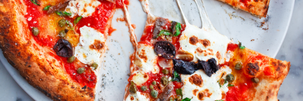

Ingredients
- 250 g pizza dough (store-bought or homemade)
- 2 tbsp olive oil
- 200 g canned crushed tomatoes
- 1 clove garlic, minced
- 1 tsp dried oregano
- 200 g fresh mozzarella cheese, sliced
- Fresh basil leaves
- Salt and freshly ground black pepper, to taste
- Extra olive oil, for drizzling
Instructions
- Preheat your oven to 220°C (425°F). If using a pizza stone, place it in the oven to heat.
- Roll out the pizza dough on a floured surface to your desired thickness.
- In a small bowl, mix crushed tomatoes with garlic, oregano, salt, and pepper to make the sauce.
- Transfer the dough to a baking sheet or hot pizza stone. Spread the tomato sauce evenly over the base.
- Top with mozzarella slices and a few fresh basil leaves.
- Drizzle lightly with olive oil.
- Bake for 10–12 minutes, or until the crust is golden and the cheese is bubbling.
- Remove from the oven, add extra basil if desired, slice, and serve hot.